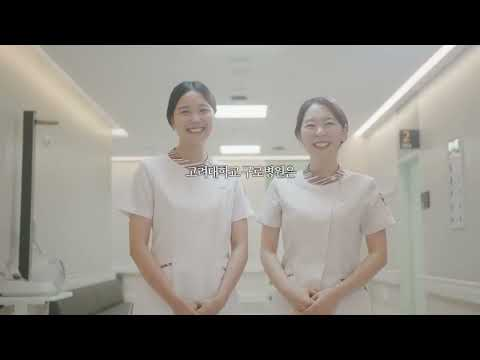

고려대학교 구로병원 간호부는 환자안전과 전문직 가치를 바탕으로, 간호사 한 사람 한 사람이 성장하고 함께 빛나는 조직문화를 만들어가고 있습니다. 임상 현장에서 묵묵히 환자 곁을 지키는 간호사들의 열정과 헌신, 그리고 서로를 지지하며 함께 성장하는 구로 간호부의 이야기를 영상에 담았습니다.
 02:45
02:45
대기 중 (클릭 시 재생)
간호사와 함께하는 긍정조직문화

03:12다음 재생 대기 (클릭 시 바로 재생)
Do together